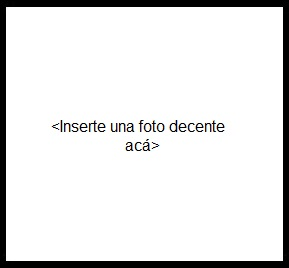

CURRICULUM VITAE

Educación (Reporte de materias cursadas y finales aquí)
- Universitario en curso: Ingeniería en Computación (UNLP). 2do año.
Conocimientos en informática
- Front-end: HTML5 y CSS.
- Back-end: Python, C, Java, Pascal y Assembler.
- Diagramas de clase y secuencia UML.
- Manejo de AutoCAD.
GitHub |
Linkedin